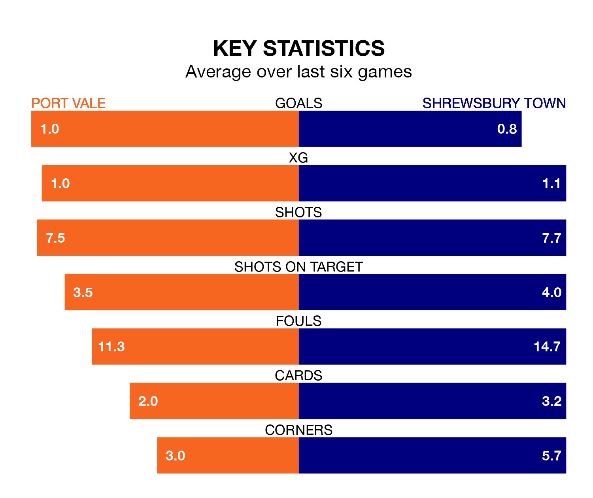

Port Vale are on a terrible run ahead of hosting Shrewsbury Town at Vale Park on Saturday, with just two points collected from their last six games.
The Valiants have picked up two draws and four losses in their last six EFL League One games, and face a Shrews side whose last six games have brought one win and two draws.
Vale are 22nd in the table after 34 games, of which they have won eight and drawn eight, earning 32 points.
Shrewsbury are two places ahead of the Valiants in 20th, with 11 wins and five draws putting them on 38 points.
In the last 10 years, Vale and Shrewsbury have played each other on 11 occasions. Vale won five of them, Shrewsbury three, and they drew three times.
On average, the Valiants scored 1.6 goals and the Shrews 1.1 in those matches.
Their last meeting was on November 25, when Shrewsbury won 2-1 at home.
With 26 goals in 36 games so far this season, Town are the league's lowest scorers with 0.7 goals per game. And they are conceding more than average, letting in 51 goals at a rate of 1.4 per game.
The home side are also below average scorers, with 1.0 goal per game, compared to a league average of 1.3. They have conceded 1.7 goals per game.
Vale's last match was on March 2, a 3-0 loss against Derby County.
Shrewsbury lost 2-0 against Blackpool last time out, also on March 2.
Saturday's match will be refereed by Ben Toner, who has taken charge of 11 EFL League One games so far this season, issuing no red cards and booking 61 players. He has awarded two penalties.
The last Vale game Toner refereed was a 3-2 home loss to Burton Albion on September 19. His last Shrewsbury match was their 2-0 loss away at Carlisle United on September 2.
Updated: 09:34 (UTC), 08/03/24